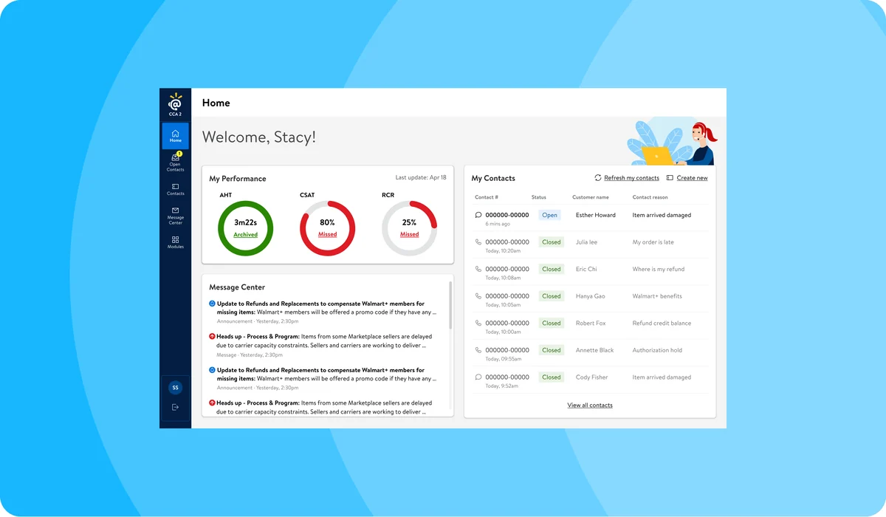
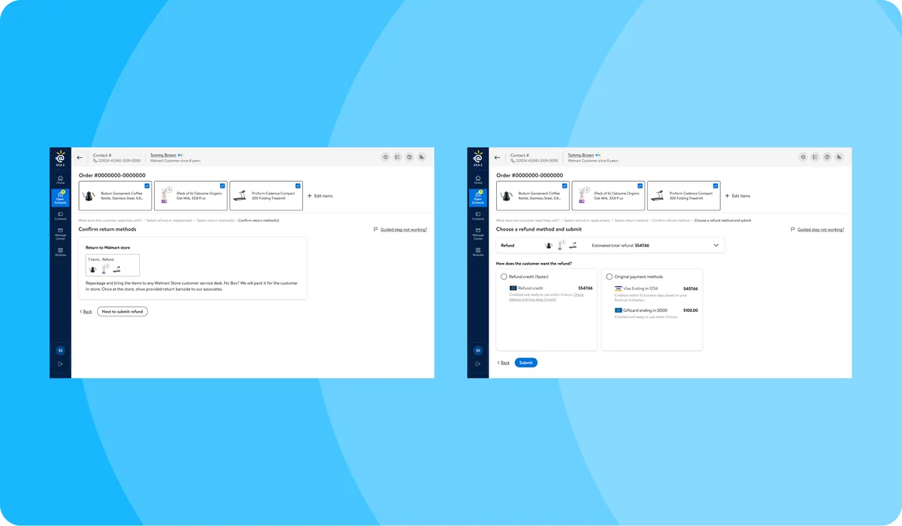

Walmart Customer Care Application
A next-generation, issue-driven care application that guides frontline agents through each customer issue with the right information and actions at every step, and automates the rest.
- Company
- Walmart
- Area
- Agent tools
- Users
- Customer care agents
- Reach
- Walmart US, Spark Driver, Walmart International

- increase in customer satisfaction score
- ~10%
- improvement in average handling time and repeat contact rate
- Double digits
- reduction in training costs
- 30%+
Overview
With Walmart eCommerce passing $100 billion in sales and Walmart+ growing quickly, customer care matters more than ever. The Customer Care Application is a one-stop solution that uses automation and AI to help frontline agents deliver efficient, satisfying support and build strong relationships with customers and members.
Challenge
In the legacy, action-driven system, resolving an issue depended heavily on each agent's skills and knowledge. That caused three problems.
Inconsistent service quality
Two customers call with the same issue and walk away with completely different outcomes: one gets a refund, the other an apology and a discount. Agents want to do right by the customer, so they reach for whatever they can, like refunds, promo codes or gift cards. Without a system that shows what has already been done or what the business considers appropriate, those well-meaning fixes can become missteps.
High training costs
Onboarding takes at least three weeks, with monthly sessions to keep agents current on new features and initiatives. Despite that investment, 60% of agents leave within their first three months, so the onboarding cycle never stops.
Long handling times
A customer calls, frustrated about a delayed order. Before the agent can offer any clarity, they have to move between more than three disconnected systems, or search several articles, to piece together the full picture. That slows them down and raises the chance of missing critical details at exactly the moment empathy and accuracy matter most.
Solution
We designed an issue-driven application built on modular guided workflows and automation.
Each issue is handled through a guided workflow, with the information and actions it needs built into every step. Agents follow a structured process while the system proactively brings up what they need, taking the cognitive load off them.
Automation removes much of the manual work, so agents can focus on the key information and on the conversation with the customer.

Impact
The product has been adopted across Walmart business units, including Walmart US eCommerce and stores, Spark Driver (Walmart's last-mile delivery service) and Walmart International.
Average handling time and repeat contact rate both improved by double digits. Customer satisfaction rose by nearly 10%, and training costs dropped by more than 30%.